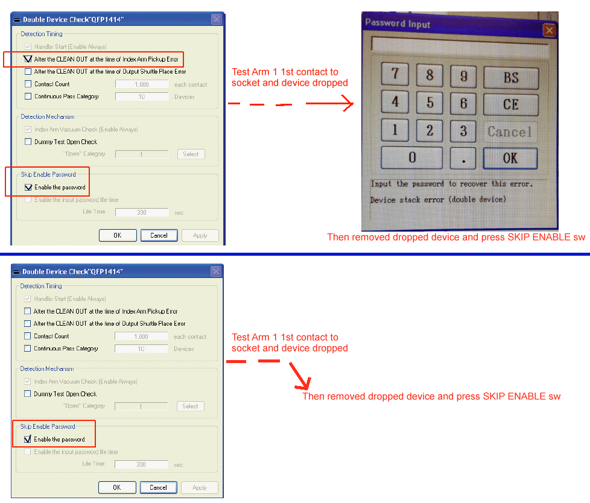

Service History
Subject: NX1032XS [Skip Enable Password]
Handler Model: NX1032XS (S/N: 182347)
Controller: RC520 (S/N: 00504), DUBOX030 (S/N: 100004), PSUNT353 (P892)
Date: 31 Oct 2012
Symptom
2 sets of print screen below on the SKIP ENABLE Password Login.
Case i)
-SkipEnable Password SELECTED & [After the CLEAN OUT at the time of Index Arm Pickup Error] SELECTED.
-Index Arm 1 1st device dropped during test
-Device dropped Alarm & Password Input login ->key password(Supervisor mode so key in Supervisor password)
-Remove device from socket and press SkipEnable sw
Case ii) - 2nd half of printscreen below
-SkipEnable Password SELECTED ONLY.
-Index Arm 1 1st device dropped during test
-Device Dropped Alarm
-Remove device from socket and press SkipEnable sw
- If we are allowed to select [Enable the password] for [Skip Enable Password] then "Password Input" should pop up even if no additional option is selected.
- For [After the CLEAN OUT at the time of Index Arm Pickup Error], I do not see the relation with CLEAN OUT.
Please advise.

Action
Cause